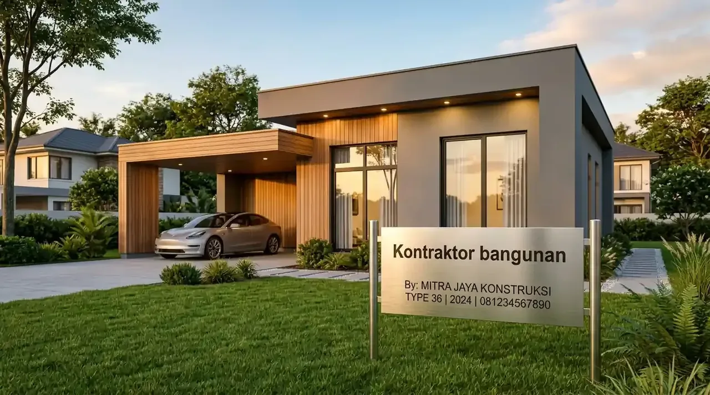

Berapa Estimasi Rata-Rata Harga Bangun Rumah Tipe 36 Turnkey?
Rata-rata harga bangun rumah tipe 36 turnkey berkisar antara Rp120 juta hingga Rp180 juta tergantung kualitas material finishing dan kondisi lahan.
Dalam kalkulasi standar industri pembangunan Indonesia, estimasi biaya konstruksi biasanya dihitung menggunakan satuan per meter persegi (m²). Untuk unit tipe 36 dengan luas bangunan 36 m², rata-rata biaya per meter persegi untuk kualitas standar hingga menengah berkisar antara Rp3,3 juta hingga Rp5,0 juta per m². Variasi nominal ini dipengaruhi secara langsung oleh tingkat kerumitan desain arsitektur, pemilihan spesifikasi sanitari, jenis penutup lantai (keramik vs granit), serta kondisi topografi lahan yang akan dibangun.
Sistem turnkey memastikan bahwa besaran harga yang disepakati di dalam kontrak penandatanganan bersifat mengikat secara legal. Artinya, seluruh komponen pekerjaan—mulai dari penggalian tanah, pembuatan fondasi batu kali atau footplate, dinding bata ringan, rangka atap baja ringan, penutup atap genteng metal/beton, hingga sistem perpipaan dan kelistrikan—sudah tercover penuh. Hal ini mempermudah Manajer Pengadaan atau Facility Manager dalam menyusun cash flow dan laporan pertanggungjawaban anggaran internal perusahaan secara presisi.
Berdasarkan Laporan Indeks Biaya Konstruksi Nasional 2025 dari Badan Pusat Statistik (BPS), volatilitas harga material bangunan seperti semen, besi beton, dan kayu mengalami kenaikan rata-rata 4,8% per tahun. Memilih sistem kontrak turnkey dari Kontraktor Bangunan melindungi pembeli dari dampak inflasi fluktuasi harga material di tengah masa pengerjaan, karena risiko eskalasi harga sepenuhnya ditanggung oleh pihak pelaksana proyek. Untuk mendiskusikan anggaran spesifik lokasi Anda, klik Konsultasi Gratis via WA guna memperoleh perhitungan spesifik secara gratis.
- Luas Bangunan: 36 m² (Contoh dimensi umum: 6 × 6 meter atau 6 × 7 meter).
- Tarif Konstruksi Rata-Rata: Rp3.300.000 – Rp4.500.000 / m².
- Total Estimasi Biaya: 36 m² × Rp3.500.000 = Rp126.000.000 (Paket Siap Huni).
Apa Saja Komponen yang Termasuk dalam Paket Rumah Tipe 36 Lengkap?
Lingkup paket rumah tipe 36 lengkap mencakup pekerjaan arsitektural, struktural, instalasi elektrikal, perpipaan sanitasi, serta finishing cat interior dan eksterior siap pakai.
Pendekatan turnkey menjamin bahwa saat penyerahan kunci (handover), unit bangunan sudah siap untuk langsung ditempati tanpa memerlukan pengerjaan tambahan yang merepotkan. Secara teknis, perincian pekerjaan terbagi menjadi empat pilar utama: pekerjaan persiapan dan struktur bawah, pekerjaan struktur atas, pekerjaan pengisi dinding dan atap, serta pekerjaan kelistrikan dan air bersih/kotor. Setiap pilar dieksekusi mengikuti standar manajemen mutu yang ketat.
Berikut adalah uraian komponen pekerjaan standar dalam paket konstruksi turnkey:
- Pekerjaan Persiapan & Struktur: Pembersihan lahan, pematokan bowplank, galian tanah, fondasi batu belah/batu kali, cakar ayam (sesuai kontur tanah), dan struktur beton bertulang SNI (sloof, kolom praktis, balok ring).
- Pekerjaan Dinding & Lantai: Dinding bata ringan (hebel) diplester, diaci halus, dan dicat 3 lapis; lantai utama menggunakan keramik 40 × 40 cm atau granit 60 × 60 cm; lantai dan dinding kamar mandi berlapis keramik anti-selip.
- Pekerjaan Atap & Plafon: Rangka atap baja ringan berstandar SNI profil C75, penutup atap genteng metal berpasir kedap suara, serta plafon gypsum board dengan rangka hollow galvalum.
- Pekerjaan Pintu, Jendela & Sanitari: Kusen aluminium tahan rayap dan cuaca, daun pintu kayu engineered/UPVC, unit kloset duduk/jongkok, shower set, kran air, bak kontrol, dan septik tank bio-filter ramah lingkungan.
- Pekerjaan MEP (Mekanikal, Elektrikal, Plumbing): Instalasi kabel listrik standar PLN SNI (sakelar, stop kontak, titik lampu downlight), instalasi jalur pipa air bersih PEX/PVC, dan jalur pipa pembuangan air kotor.
Dengan kelengkapan cakupan tersebut, pengembang properti maupun pengelola fasilitas dapat menghemat waktu hingga ratusan jam kerja yang biasanya terbuang untuk mengawasi tukang, membeli material eceran, atau mengurus kesalahan teknis di lapangan.

Perencanaan paket rumah tipe 36 lengkap mencakup struktur beton bertulang, dinding presisi, instalasi MEP, dan finishing siap pakai.
Mengapa Memilih Kontraktor Turnkey Rumah Subsidi dan Operasional Bisnis?
Menggunakan jasa kontraktor turnkey rumah subsidi dan proyek komersial menjamin efisiensi alur kerja, standarisasi hasil pengerjaan, dan ketepatan jadwal penyerahan aset.
Pengadaan fasilitas pemukiman massal, seperti komplek hunian karyawan pabrik, mess pekerja perkebunan, atau perumahan subsidi, membutuhkan eksekusi berulang (repetitive construction) yang terstandarisasi tinggi. Kesalahan kecil pada satu unit tipe 36 yang direplikasi puluhan kali dapat mengakibatkan kerugian finansial yang sangat besar. Di sinilah peran kontraktor berpengalaman menjadi sangat krusial dalam menerapkan metode manufaktur konstruksi yang terstruktur.
Integrasi teknologi manajemen proyek modern memungkinkan kontraktor memantau kurva S pengerjaan secara real-time. Penggunaan material prefabrikasi dan standarisasi pemotongan baja ringan maupun keramik mampu memangkas sisa material (construction waste) hingga di bawah 3%. Dampak langsungnya adalah penekanan beban biaya akhir yang tercermin pada murahnya paket harga bangun rumah tipe 36 turnkey tanpa mengorbankan durabilitas kekuatan bangunan.
Menurut data Studi Efisiensi Pengadaan Fasilitas Korporasi 2026 oleh Lembaga Pengembangan Jasa Konstruksi (LPJK), penggunaan metode pengadaan tunggal turnkey terbukti mempercepat lead time pengerjaan proyek perumahan instansi hingga 35% dibandingkan menggunakan metode swakelola atau pemisahan jasa desain dan kontraktor pelaksana. Bagi Anda yang memiliki kebutuhan pengadaan berskala masif, mempercayakan eksekusi kepada Kontraktor Bangunan adalah opsi terbaik untuk menjaga performa tata kelola bisnis Anda.
Bagaimana Komparasi Spesifikasi dan Estimasi Biaya Berdasarkan Kelas Paket?
Perbandingan spesifikasi teknis dan estimasi biaya membedakan paket berdasarkan kualitas material pengisi, tipe finishing, dan daya tahan komponen utilitas bangunan.
Guna memberikan gambaran transparan sesuai anggaran perusahaan Anda, Kontraktor Bangunan menawarkan beberapa tingkatan paket turnkey yang dirancang adaptif. Baik untuk kebutuhan mess pekerja yang mengutamakan fungsi ekonomis, maupun untuk rumah dinas manajemen yang membutuhkan nilai estetika lebih tinggi, seluruh pilihan tetap mengacu pada standar keamanan struktur SNI.
Berikut adalah tabel komparasi spesifikasi teknis dan estimasi harga untuk unit Tipe 36 (dimensi tapak 6 × 6 meter):
| Elemen Spesifikasi | Paket Standard (Ekonomis) | Paket Premium (Commercial) | Paket Executive (Deluxe) |
|---|---|---|---|
| Estimasi Biaya / Unit | Rp120.000.000 - Rp135.000.000 | Rp140.000.000 - Rp160.000.000 | Rp165.000.000 - Rp185.000.000 |
| Fondasi & Struktur | Batu Kali + Beton Bertulang Standard | Batu Kali + Footplate + Struktur SNI | Footplate/Cakar Ayam + Struktur Extra |
| Material Dinding | Bata Merah / Hebel + Cat Standard | Hebel Presisi + Cat Weatherproof | Hebel Presisi + Accent Wall / Batu Alam |
| Lantai Utama | Keramik 40 × 40 cm | Granit 60 × 60 cm (Homogeneous) | Granit 60 × 60 cm High-Grade |
| Kusen & Pintu | Kayu Lokal / Aluminium Standar | Aluminium Powder Coating + Panel Wood | Aluminium Anodized + Smart Lock System |
| Sanitari & Plumbing | Kloset Jongkok + Shower Standard | Kloset Duduk Monoblok + Shower Set | Kloset Duduk Premium + Water Heater Line |
| Estimasi Waktu Pengerjaan | 60 - 75 Hari Kerja | 45 - 60 Hari Kerja | 45 - 60 Hari Kerja |
Setiap tipe paket di atas dirancang untuk memberikan fleksibilitas alokasi capital expenditure (CapEx) perusahaan Anda. Melalui komunikasi terbuka sejak tahap pra-konstruksi, tim kami akan membantu menyelaraskan kebutuhan fungsional dengan kapasitas finansial yang dialokasikan. Untuk mendapatkan simulasi Rencana Anggaran Biaya (RAB) kustom secara rinci, segera Konsultasi Gratis via WA bersama sales engineer kami.
Mengapa Memilih Kontraktor Bangunan Sebagai Partner Konstruksi Anda?
Kontraktor bangunan memberikan jaminan kualitas pengerjaan presisi, garansi pemeliharaan tertulis, transparansi biaya, dan komitmen waktu penyelesaian proyek yang tepat.
Membangun aset fisik membutuhkan tingkat kepercayaan tinggi terhadap kredibilitas eksekutor di lapangan. Kontraktor Bangunan hadir dengan rekam jejak profesional dalam mengelola berbagai skala pengerjaan konstruksi komersial, residensial, hingga penyediaan fasilitas pabrik. Kami memahami betul bahwa ketepatan tenggat waktu (deadline) merupakan kunci utama agar rencana operasional bisnis Anda tidak terganggu.
Kami menjamin tidak ada biaya tersembunyi setelah kontrak disepakati (fixed price guarantee). Setiap pengerjaan berada di bawah pengawasan langsung tim site engineer tersertifikasi yang melakukan kontrol kualitas di setiap milestone. Selain itu, kami memberikan sertifikat garansi pemeliharaan (retention period) pasca penyerahan kunci untuk memastikan unit bangunan bebas dari cacat struktur, kebocoran atap, maupun masalah perpipaan.
Pertanyaan yang Sering Diajukan (FAQ)
Kesimpulan Praktis
Mengamankan efisiensi operasional dan kepastian anggaran dalam pembangunan aset fisik kini jauh lebih mudah dengan memanfaatkan skema borongan utuh. Pemahaman atas skema harga bangun rumah tipe 36 turnkey memungkinkan para pengambil keputusan untuk mengeksekusi proyek pemukiman, mess, atau investasi properti secara cepat tanpa dihantui risiko kebocoran biaya. Dengan variasi spesifikasi yang dapat disesuaikan, solusi turnkey berdiri sebagai standar baru konstruksi modern yang praktis, terukur, dan akuntabel.
Pastikan investasi fasilitas dan aset bangunan Anda ditangani oleh tim ahli yang mengedepankan transparansi dan legalitas hukum pengerjaan. Jangan biarkan rencana ekspansi bisnis Anda tertunda akibat ketidakpastian biaya konstruksi. Hubungi tim spesialis kami sekarang juga, dapatkan penawaran harga terbaik serta analisis RAB instan dengan menekan tombol Konsultasi Gratis via WA dari Kontraktor Bangunan hari ini.